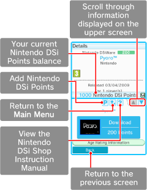

1. About Nintendo DSi Shop
The Nintendo DSi Shop offers a variety of free and purchasable content, exclusively for Nintendo DSi™ (Nintendo DSiWare™), that is only available here.
©2008-2009 Nintendo. Trademarks are property of their respective owners. Nintendo DSi is a trademark of Nintendo.
©2009 Nintendo. All rights reserved.
● Screen Functionality and Layout
